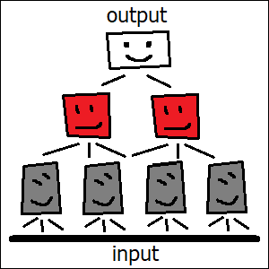
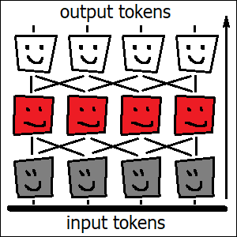

Artificial neural networks can rely on “tricks” that are not accessible to biological brains. Convolutional neural networks use “cloned” copies of the same neuron to process remote areas of the same image simultaneously (a task which animal brains can only perform sequentially). Transformer architecture similarly employs massive copying of its neurons. It collects data from many “cloned” neurons in parallel and compares these “cloned” neurons to each other pairwise. The latter is the essence of the so-called “attention mechanism”, which doesn’t have direct analogies in animal brains. Overall, such tricks allow artificial neural networks to employ fast “intuitive” processing in some tasks (including the handling of language) which human brains cannot handle without relying on complex mechanisms like memory and conscious reasoning.
Neural networks typically process input data in stages (also known as “layers”). In visual processing tasks (like telling apart dogs from cats), the very first among such stages will usually detect so-called “edges”, or abrupt changes in color or brightness. This stage will calculate directions in which different colors change around every point within the picture, along with the intensity of such changes. The second layer will take the “edge” information calculated by the first stage as its input, and by comparing the patterns of neighboring “edges” should ideally be able to detect textures, like grass, woven fabric, foam or sand. Later processing stages will detect objects of ever increasing size and complexity, starting from simple shapes like tennis balls, bricks, eyes and noses, and gradually moving to the recognition of faces, muzzles, ears and tails. And finally, by comparing the types of detected muzzles and tails against their expected values, the network should be able to make its ultimate judgement about whether the picture represents a dog, or a cat.
Quite early in the history of artificial intelligence (in the 1980s at least), with the advent of the so-called “convolutional” neural networks, it was noticed that the desirable detection rules, at every processing stage, should’t depend on the location within the image where the processing occurs. In other words, the rules for detecting the grass texture must be the same everywhere, be it in the lower left corner of the picture, the upper right one, or at the pictures’s very center. What it means, is that it would be totally sufficient to only construct the sub-algorithm for grass detection once, and reuse it everywhere across the image’s entire visual field. And the same would, of course, apply to all other sub-algorithms, like those detecting whiskers or different styles of fur.
Our final algorithm (the one which should be able to detect dogs and cats) would then contain only one single module (or a set of rules) for every processing stage: one for detecting the “edges”, another one for textures, and so on. And we could then, at every stage, apply the respective set of rules identically to each and every area within the picture. Or, to say the same slightly differently, we could “clone” the same module multiple times, and make all these “cloned” copies perform their computations simultaneously, by applying identical algorithm steps to different input data.
Doing something like this is a no-brainer when you have access to a modern multi-core digital computer (or a graphics card) with tons of memory. However, biological neural networks inside our brains don’t really work in such a way. Our brain performs computations with the help of living cells (neurons), and every such living cell is unique. If we wanted to make a “copy” of some “module” inside our brain, it would have to be a physical copy (a bunch of similarly connected neurons, placed somewhere else inside the brain). And if we wanted such sister “modules” to do the processing identically, we would have to make sure that any of their internal connections are indeed the same. Achieving such a level of synchronization between physically separated areas within a living brain is not an easy task. Especially if you needed to tweak these connections once in a while in order to adapt to new experiences (like the discovery of an entirely new breed of dogs).
Because of that, any serious visual processing inside our brain doesn’t happen in parallel. In fact, our “cameras” (the eyes) don’t even have enough hardware resolution for doing so. Most of our light receptors are concentrated in a tiny area at the very center of our visual field. We can’t even see that much outside of this central spot (except for some trivial processing like motion detection or noticing sudden changes in color or brightness). If something unusual is detected in this peripheral area, we have to move our eyes, so that this highly sensitive central spot could examine more carefully what exactly it was. And whenever we need to make sense of a complicated picture that we’ve never seen before (like a painting in a museum), our eyes have to scan it. Moving the eyes isn’t trivial, it requires precise coordination between a bunch of different muscles. Our brain has to plan for such movements in advance. And it has to decide which areas should be scanned first, too. Most of this planning is unconscious though, so we are rarely aware of it actually happening.
Computer vision doesn’t look like this. Duplicating an existing software module many times is easy and cheap (we only need to allocate memory for all the data, whereas the algorithm itself can be shared). And even more importantly, this allows artificial neural networks to bypass all these complex planning and motor coordination steps necessary for scanning the field of view. As a result, automated surveillance cameras have perfectly acute vision across their entire visual field, and they process all the different areas of it simultaneously, in parallel. If you happened to watch “Squid game” (a Korean drama series), you might remember its famous scene with a huge robotic doll monitoring a crowd of people. This doll had its eyes moving while doing so, and it was totally unrealistic. Real robots don’t move their eyes. They are able to capture the entire scene, with its every minute detail, in a single grasp.
Thanks to the parallel processing, it might take such a robotic system exactly the same time to detect all the dogs and cats present on a given picture, along with their breeds, as it would have taken it to classify any single dog or cat alone. And since this whole processing is still very fast (and also actually imprecise), it should therefore still be classified as a kind of “intuitive” thinking, similar to the detection of a single dog or cat. It’s a massively parallel intuition though. Something which we humans aren’t capable of doing.

One of the problems with convolutional neural networks described above is that they will typically only process data locally. We detect textures by analyzing neighboring “edges”, then we discover small objects (like an eye) by correlating a bunch of adjacent textures, and later we make sense of larger objects (like a face) by combining a few simpler objects located nearby (like eyes, nose and ears). This often results in a pyramid-like structure of the network architecture, with deeper layers being responsible for detection of objects that are larger in size. Such local-only processing doesn’t work well though when the picture contains a few related smaller objects that are separated in space and therefore don’t constitute a single bigger object. Like, for example, a pair of humans sitting in opposite corners of a room (or a pair of dogs or cats, for that matter). Depending on how these humans might look at each other (and whether they do it at all), the overall meaning of such a picture might be very different in fact.
Such non-local processing becomes even more crucial when it comes to dealing with text (or sound). An example could be a character introduced in one chapter of a book which in later chapters is only referenced by their name. In order to make sense of these later chapters, the reader has to be able to correlate this name with its description made elsewhere.
There have been a lot of attempts to achieve such non-locality with artificial neural networks, but we will focus here on the single most famous and important one. It’s called the Transformer architecture, and it was invented in 2017 by a group of people with remarkably diverse cultural backgrounds (coming originally from countries like former East Germany, India, United States, United Kingdom, Canada, Poland and Ukraine). The name itself doesn’t mean a lot by the way: it came, among other things, from one of the authors’ passion for transformer robot toys as a kid.
Similar to convolutional architectures described above, Transformer neural networks consist of a bunch of layers (or processing stages, if you wish). Each layer will correspond to a single “algorithm module” (or a set of rules, specific to this particular layer, to be discovered during the training process). Transformers also similarly involve a lot of “cloning”. They will typically split input data into a large collection of basic elements (the so-called “tokens”), and a separate fully functional copy of each module will then be instantiated for every input token. Just like before, all these “cloned” modules will work together, simultaneously, at every processing stage.
Transformer architecture is amazingly flexible. It can do everything what “classical” neural networks (including those described above) were already capable of doing, and it can do much more. Thanks to this flexibility, it can also work with different types of input data. Its input “tokens” can be pieces of text (like letters, combinations of letters and sometimes even entire words). But they can equally well represent small pieces of a picture. Or sound samples. Transformer architecture can handle any of these (with appropriate training). And it can handle a combination of these, too.
The reason behind this flexibility is the way in which Transformers connect their neighboring layers with each other. First of all, any of the “cloned” modules at a given processing stage can collect data from arbitrary modules from the previous stage (the total number of modules which are ultimately picked to form such a connection is limited, but they can all be chosen freely). Second, the algorithm for choosing the modules to collect the data from is itself parameterized, and independently so for each layer. Which means that the rules for picking these connections are themselves discovered automatically, during the training process. Some layers may end up collecting the data locally, just like convolutional networks do. Whereas other layers might instead “choose” to look for somewhat similar words located far away, or for words which look dissimilar instead. The total list of opportunities is actually quite large. And when the training is complete, the final algorithm can thus achieve a highly specialized connection pattern for every processing stage, “handcrafted” for solving the very specific problem which this algorithm has been trained on. None of the network’s connections are hard-coded in advance.
Curiously, this entire method which allows Transformers to connect their layers with each other in such a flexible way is actually entirely non-biological, in the sense that it never occurs in living animal brains. The official name of this method is “attention mechanism”, but it has little (if anything) in common with how actual human attention really works.
“Attention mechanism” creates a connection by testing all the connection candidates (essentially, all the possible module pairs) and only picking the ones which better satisfy certain criteria (which are themselves defined by the tunable parameters, discoverable through training individually for each particular layer). None of biological brains have ever been able to do something like this. First of all, living brains rarely rely on “cloned” neural circuits in the first place, because of these synchronization issues. Second, this test which estimates the candidate connections would have to be run on some “neuronal” hardware as well, and it would have to be run for every pair of the “cloned” modules, each time with different data. Living brains can’t rewire their connections at such a speed, and they don’t have enough space to duplicate the test circuit itself that many times either.
Attention mechanism is thus a purely artificial construct, and quite an unusual one. Its existence is also the reason why most modern AI models can only work with “contexts” of limited size. “Context” here means the entire set of input tokens, and it’s limited because of this need to perform the computation for every pair of modules (each of them corresponding to a different input “token”), which means that the total processing time is proportional not to the size of the input (i. e. to the total number of tokens), as it would typically be the case for “classical” neural networks, but rather to the square of this total count. And this in turn means that our computational cost increases rather fast with every extra token.
But nevertheless, I would still classify Transformers as examples of “fast” thinking. Once the training of our Transformer neural network is finished, its processing time is always perfectly predictable. By merely knowing the number of input tokens we can tell exactly how long it will take for the algorithm to produce the output. This algorithm is still mostly a linear sequence of steps, and each of its processing stages is only run once. There’s no feedback involved in this process, no dead ends and no open-ended loops. And due to this lack of feedback, any output generated by such an algorithm (as is usually the case with “classical” neural networks) is similarly never guaranteed to be perfect. The quality of our Transformer-based neural network will improve with more training, but there’s still no way to ensure that its predictions are going to be correct in every possible case. In other words, whatever this algorithm might generate as its output, it’s not a result of careful and balanced thinking. It’s an intuition.
It’s a truly powerful intuition though. We humans cannot really process speech, including written text, unconsciously (except for individual words or maybe trivial phrases). Whenever we need to make sense of a radio announcement, even a short one, we have to dedicate our entire conscious reasoning to this activity. Transformers, on the other hand, are able to make sense of much longer texts, and they do this by “grasping” this entire long text in its entirety, in one glance.
Unlike humans, Transformers also don’t need to rely on any complicated memory mechanisms. This is possible because they run on modern digital computers which already have huge amounts of random-access memory built in, and they use it a lot. By making all these innumerable “cloned” copies of the same algorithm module and letting every such “cloned” module run with different data, Transformers essentially get access to all the data all at once. This data, calculated and stored for every token, will contain tons of information. Like, for example, information about whether the text around any given token represented a description of a person, and if so, what their name was, and what this description had said so far about this person’s character traits. When the same name is mentioned once again somewhere later in the book, some other module (the one responsible for correlating names with descriptions) will search all the available data and find the token whose data entry seems to contain the most complete description of a person with the same name. It will then borrow part of this information from there into the data entry associated with the token merely mentioning the name. And in this way, the name mentioned elsewhere will become not merely a name but a name with a story attached to it.
Recalling a person’s character by their name isn’t possible without some kind of memory. And since our human brains don’t have random-access memory available, they have to rely on something different, and probably much less efficient. We still don’t fully understand how human (or animal) memory really works. We know that there are many different mechanisms and different neural networks involved in this process, and that we actually have a lot of different types of memory available (like short-term, working and long-term). We also know that our short-term memory has rather limited capacity, and that even our long-term memory isn’t always reliable.
Artificial neural networks may look very simple compared to the enormous complexity of a living human brain. And yet, they can cut corners too. By being able to run identical algorithm modules on different data and having instant access to all these data, artificial networks can skip a lot of truly complicated activities which humans and other animals can’t live without. Convolutional neural networks can see an entire picture all at once, without ever moving the camera. Whereas Transformers can go by pure intuition in tasks like language processing, which we humans cannot handle without relying heavily on various kinds of memory along with the very marvel of human cognitive ability, which is conscious reasoning.
